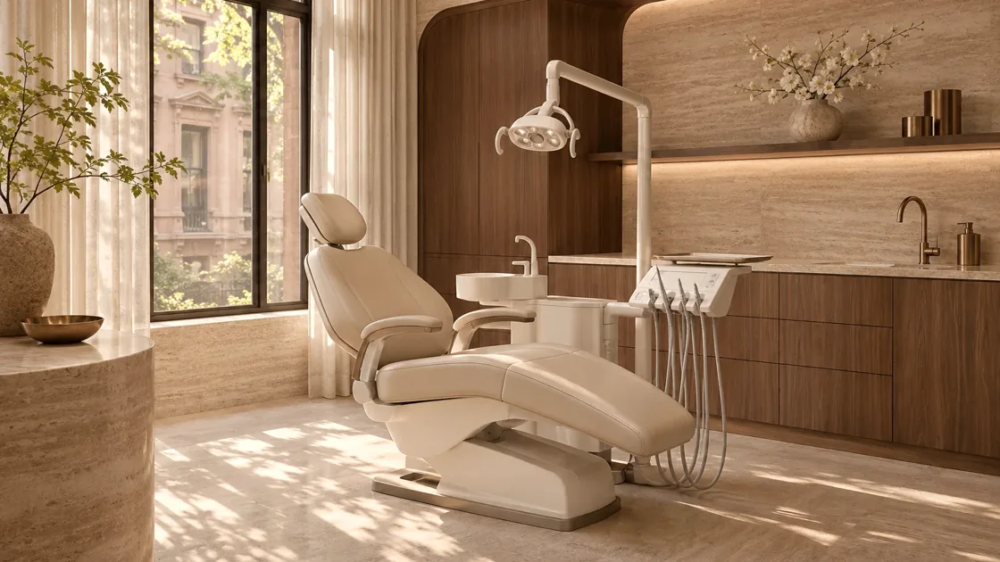
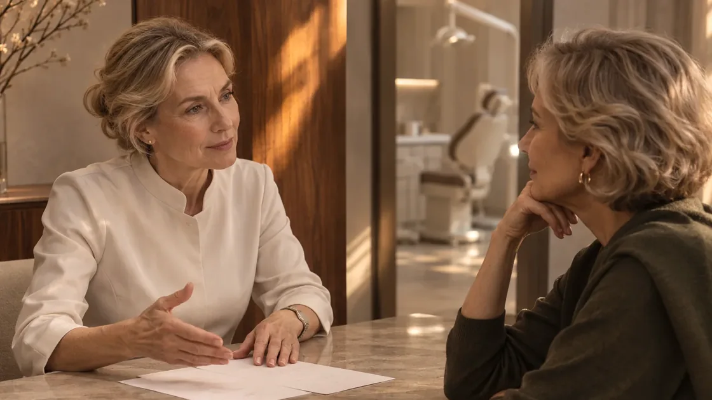
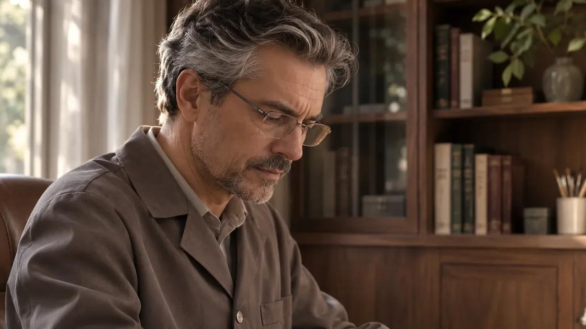
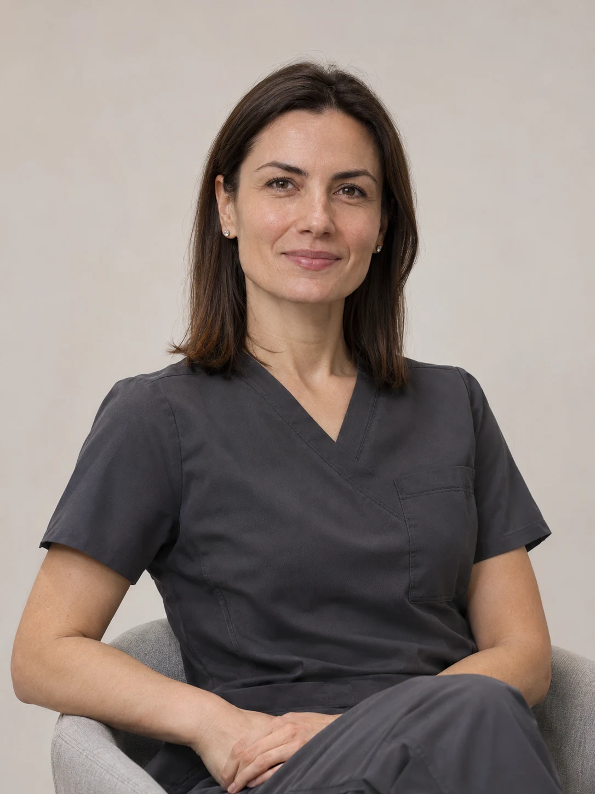
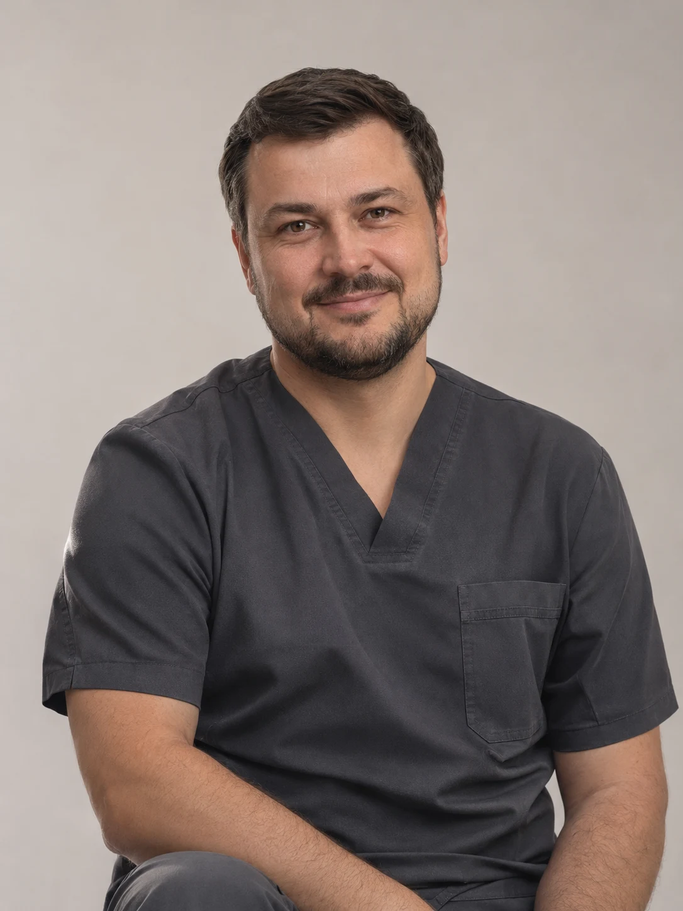
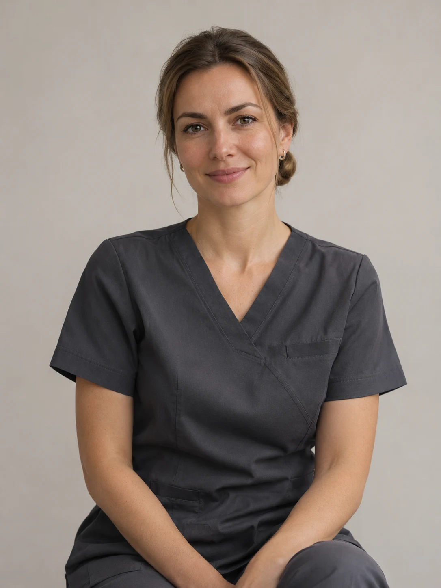

Ортопед · эстетическая стоматология

Частная стоматология
В работе над улыбкой мы сохраняем главное —
черты, по которым узнают вас.
Практика Varenne

Мягкий дневной свет, кресло у окна и несколько минут, чтобы устроиться перед встречей.

На консультации можно показать, что вас беспокоит, и обсудить с врачом варианты лечения.

За рабочим столом зубной техник изучает детали будущей реставрации — её цвет, прозрачность и форму.
Команда Varenne
С кем обсудить ваш вопрос? Познакомьтесь со специалистами и выберите направление приёма.
Все специалистыОртопед · эстетическая стоматология

Терапевт · эндодонтист

Хирург · имплантолог

Ортодонт
Консультация